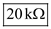

Write the expression for the differential voltage gain.

Substitute  for
for  and
and  for
for  in the equation.
in the equation.
Therefore, the differential voltage gain,  is
is .
.
Refer to Figure 2.16 in the textbook.
Re-draw the differential amplifier circuit
Write the expression for the differential voltage gain.
Substitute for and for in the equation.
Therefore, the differential voltage gain, is.
The differential input resistance is,
Substitute  for
for  in the equation.
in the equation.
Therefore, the differential input resistance, is.
Consider the two key resistance ratios are different from each other by  .
.
Write the condition.
Determine the common-mode gain.
Therefore, the common-mode voltage gain,  is .
is .
Substitute for and for  in the equation
in the equation
Therefore, the common-mode-rejection-ratio is.